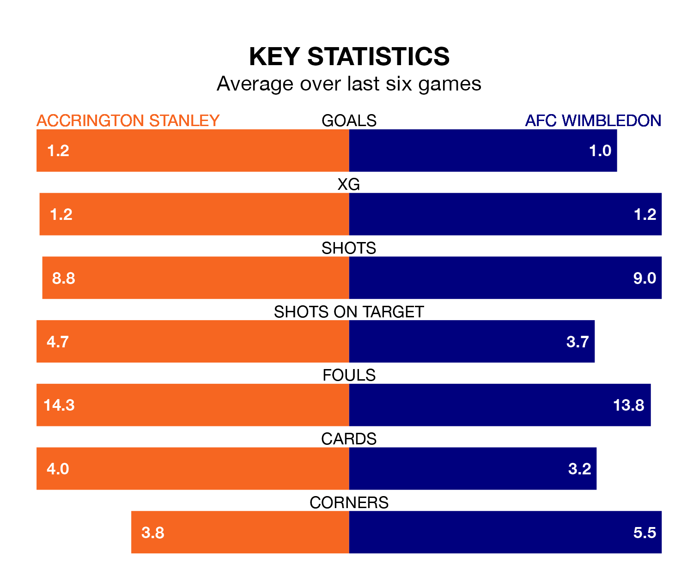

Accrington Stanley host AFC Wimbledon on Tuesday at the Wham Stadium in EFL League Two.
In their last league match, on Saturday, Accrington lost to Milton Keynes Dons 2-1 away, with their goal scored by Jack Nolan.
Wimbledon won, 2-0 at home against Barrow, with Omar Bugiel and Ronan Curtis on the scoresheet.
In Alex Bass, Wimbledon can rely on one of the league's safest pair of hands. He has kept 11 clean sheets in his 30 appearances this season, and only one other 'keeper – Mansfield Town's Christy Pym – has been able to prevent the opposition scoring on more occasions in EFL League Two.
In Accrington's net, Jon McCracken has three clean sheets in 11 games. He has conceded a goal every 65 minutes, 30% more often than the 84 minutes between goals for Bass.
In the last 10 years, Accrington and Wimbledon have played each other on 13 occasions. Accrington won five of them, Wimbledon four, and they drew four times.
On average, Accrington scored 1.7 goals and the Dons 1.8 in those matches.
Their last meeting was on October 24, when Accrington won 4-2 away.
With 43 goals in 30 games so far this season, Stanley are scoring at below the league average rate with 1.4 goals per game. But they are conceding fewer than average too, letting in 40 goals at a rate of 1.3 per game.
The Dons, meanwhile, are average scorers, with 1.5 goals per game. They have conceded 1.1 goals per game.
The away side are eighth in the table after 30 games, of which they have won 12 and drawn 10, earning 46 points.
The hosts are five places behind Wimbledon in 13th, with 12 wins and six draws putting them on 42 points.
Accrington are in mixed form in EFL League Two, with two wins and two draws from their last six games.
And also with two wins and two draws over that period, Wimbledon's form is identical – they have both taken eight points from 18.
Updated: 13:30 (UTC), 12/02/24